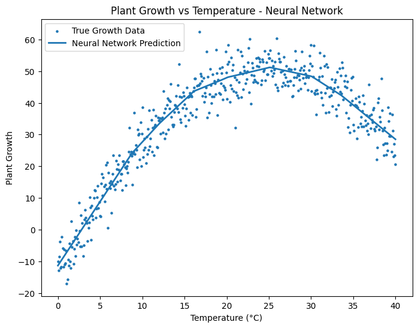

Midterm - Hands-on Exercise 2 (Linear Regression Using Neural Network - Plant Growth)
Description: A machine learning exercise implementing a Multi-Layer Perceptron (MLP) neural network to model non-linear synthetic data representing plant growth based on temperature.
Objectives/Purpose:
- To address the underfitting limitations observed in the previous simple linear regression exercise.
- To implement an Artificial Neural Network (ANN) using Scikit-Learn's
MLPRegressor. - To utilize a machine learning pipeline for data preprocessing (feature scaling) and model training.
- To evaluate the performance improvements when applying a non-linear algorithm to quadratic data.
Key Features
- Neural Network Implementation: Configured a multi-layer perceptron with two hidden layers (50 nodes each) and a ReLU activation function to capture complex patterns.
- Pipeline Integration: Used Scikit-Learn's
Pipelineto seamlessly integrateStandardScalerwith the neural network, ensuring the input features were properly normalized for the gradient-based optimizer. - Significant Metric Improvement: Achieved an R-squared score of 0.92, demonstrating a highly accurate fit compared to the simple linear model (0.43).
Important Code Blocks
1. Pipeline Construction and Model Fitting
This block defines the processing pipeline. The StandardScaler standardizes the temperature data, which is essential for neural networks to converge efficiently. The MLPRegressor is then initialized with specific hyperparameters.
model = Pipeline([
("scaler", StandardScaler()),
("nn", MLPRegressor(
hidden_layer_sizes=(50, 50),
activation="relu",
solver="adam",
max_iter=5000,
random_state=42
))
])
model.fit(X, y)2. Prediction and Evaluation
Once trained, the pipeline handles both the scaling and prediction of the input data. Standard regression metrics are computed to quantify model accuracy.
y_pred = model.predict(X)
mae = mean_absolute_error(y, y_pred)
mse = mean_squared_error(y, y_pred)
rmse = np.sqrt(mse)
r2 = r2_score(y, y_pred)Screenshots & Results

Evaluation Metrics Output:
- Mean Absolute Error (MAE): 3.88
- Mean Squared Error (MSE): 23.82
- Root Mean Squared Error (RMSE): 4.88
- R-squared (R²) Score: 0.92
Tools & Technologies
- Languages: Python 3
- Libraries/Frameworks: NumPy, Matplotlib, Scikit-Learn (MLPRegressor, StandardScaler, Pipeline)
- Platforms: Google Colab / Jupyter Notebook
Challenges & Solutions
Problems Encountered: The primary challenge was addressing the high bias (underfitting) from the previous exercise. Additionally, when using neural networks, raw unscaled data can cause the optimization algorithm (Adam) to converge slowly or find poor local minima.
How I Solved Them: Replaced the simple linear model with an MLPRegressor capable of mapping non-linear functions. To ensure the model trained efficiently, I implemented a data scaling step using StandardScaler. Embedding this into a Pipeline prevented data leakage and kept the code modular and clean.
Learning Reflection
What I Learned: I learned the practical necessity of feature scaling when working with distance-based or gradient-based algorithms like neural networks. I also observed firsthand how adding hidden layers and non-linear activation functions (ReLU) allows a model to conform to complex, underlying data distributions.
Skills Gained: Constructing Scikit-Learn Pipelines, tuning basic neural network hyperparameters (hidden layers, activation, solver, iterations), and evaluating comparative model performance.